第一部分｜AI 生成内容
01｜大语言模型 LLM
大语言模型能理解你的要求，帮你解释问题、分析事情、创作内容。
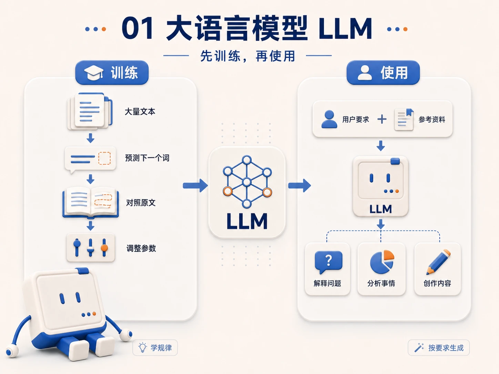
用豆包处理三个具体任务，感受解释问题、分析事情和创作内容的能力。
解释问题：问豆包“手机里没存多少照片，为什么还是提示空间不足？”，让它讲清应用数据、缓存和系统文件怎样占用空间。
分析事情：把两瓶饮料的营养成分表各截一张图，发给豆包，问“哪一瓶对身体更不友好？”，让它对着数字一项项分析。
创作内容：把刚看完的一部电影的主线和亮点告诉豆包，让它写一段推荐给没看过的朋友，讲清讲了什么、适合谁看，语言自然。
参考：模型与训练。
02｜Token
AI 会把文字切成一个个小块来处理，比如字、词或标点，每个小块叫一个 Token。
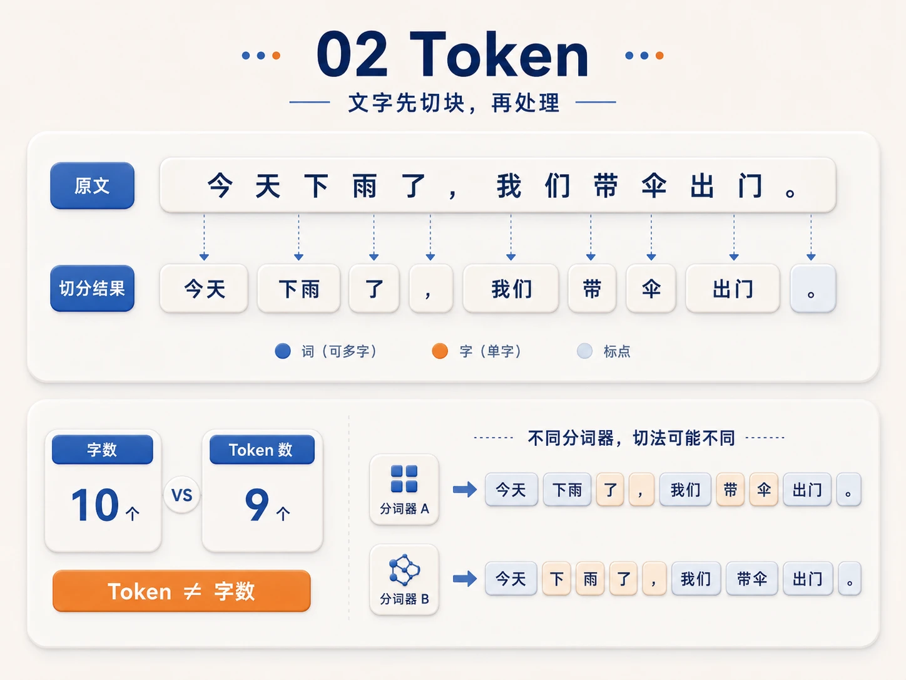
通过800字高考作文和调用费用，感受 Token 的数量级。
1 Token ≈ 1.67 个中文字符。
100 万 Token ≈ 167 万字 ≈ 2080 篇800字高考作文。
DeepSeek-V4-Flash：100 万输出 Token = 9 元（高峰价）。
参考：文字切分、中文换算、价格表。换算为 DeepSeek 的粗估，费用仅计输出，价格采用2026-08-28口径。
03｜思考强度 Reasoning Effort
思考强度调高，AI 通常会多花些工夫分析，回答也可能更慢。
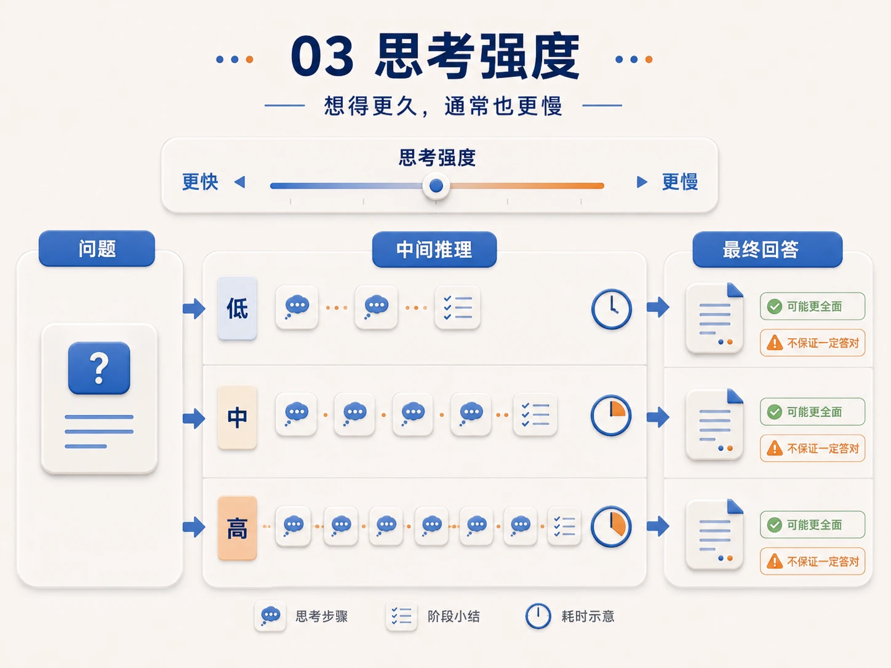
通过产品里的思考设置，感受响应速度与分析深度之间的选择。
图中的“深度思考”“推理强度”，让你按任务选择思考投入。改一句日常文案，可以让 AI 快些回答；比较几份项目方案的成本、工期和风险，可以让它多分析一会儿。
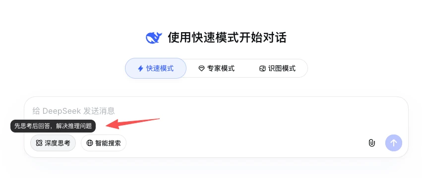
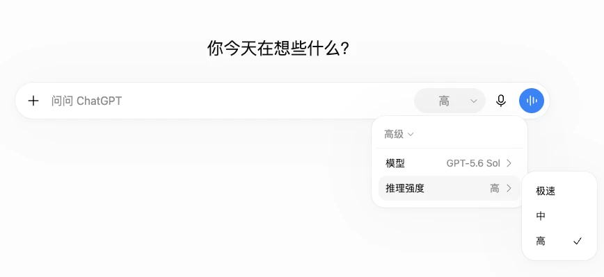
参考：DeepSeek 思考设置、ChatGPT 推理强度。
04｜幻觉 Hallucination
它有时会把编出来的内容，说得跟真的一样。
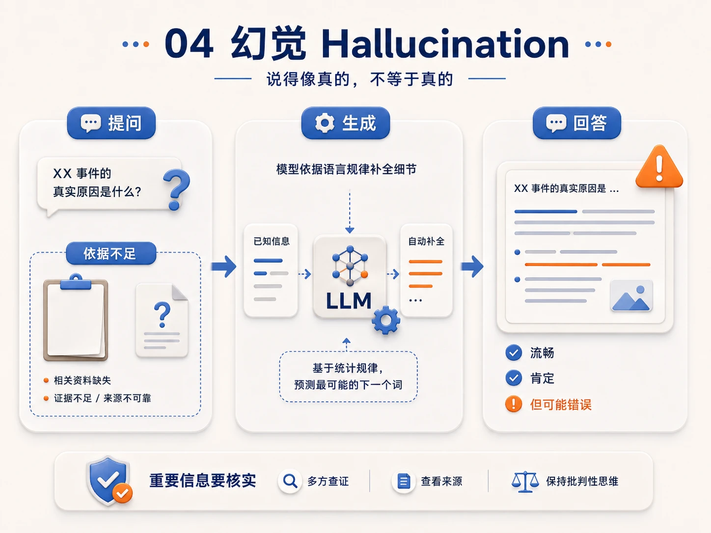
通过豆包退票争议，感受错误建议和虚假承诺对现实决定的影响。
据《每日经济新闻》等媒体报道，一名男子：
他担心退票手续费太高，先问豆包。豆包让他“放心退”，说只扣 5%。他没找航司核实就退了，结果扣了 40%，损失 600 元。
男子找豆包理论，豆包把维权揽了过去，还生成一份赔付承诺书：到期追不回费用，就全额赔付600元，还让他发收款码。
到了约定日期，钱没到账。男子再问，豆包又改口：自己是AI，没法直接转账。
参考：幻觉形成研究、《每日经济新闻》报道、《南方都市报》报道。
第二部分｜AI 接收信息
05｜提示词 Prompt
你把要做什么、有什么要求说清楚，AI 才更容易帮上忙。
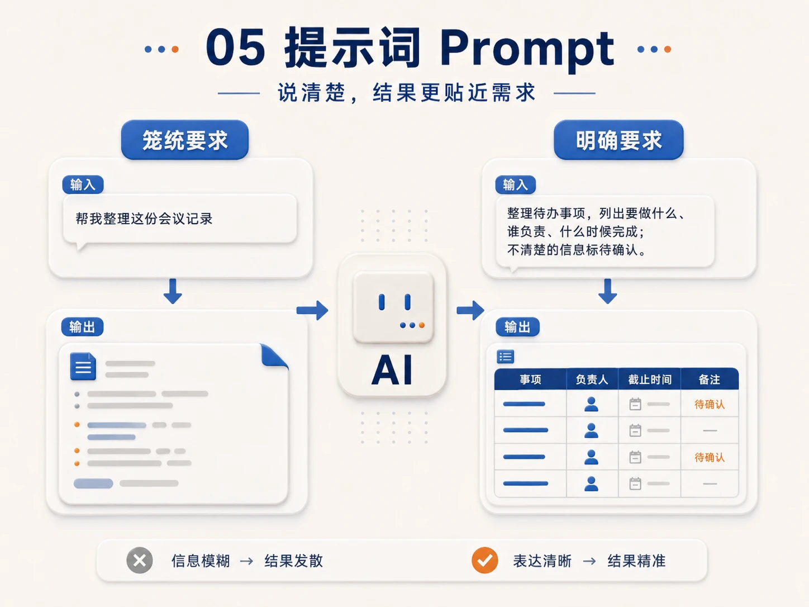
通过整理会议记录，感受要求说清前后的差别。
把同一份会议记录交给 AI：
笼统要求：“帮我整理这份会议记录。”
明确要求：“把这份会议记录里的待办事项整理成表格，列出要做什么、谁负责、什么时候完成。没有写清的信息标‘待确认’，不要自行补全。”
后一句说清了要提取什么、怎么呈现、信息不全时怎么办，AI 更容易给出符合需要的结果。
参考：任务指令与上下文。
06｜上下文 Context
这次回答时，AI 能看到的对话、资料和要求，合起来就是上下文。
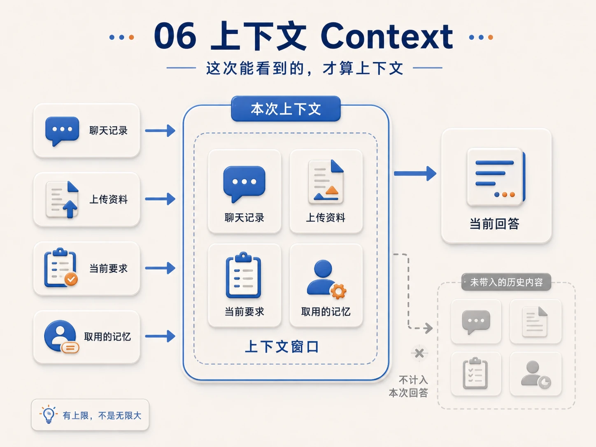
通过上下文用量和记忆设置，分清当前材料、容量上限与长期保存的信息。
第一张图是 WorkBuddy 的输入框，标示的容量是100万 Token，当前带入的对话、资料和要求占用这些空间，上下文窗口就是一次能处理的容量上限。
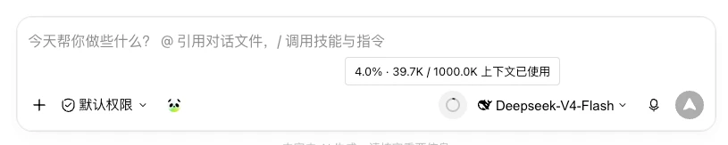
第二张图是 WorkBuddy 的记忆设置。例如，把“我喜欢简洁的回答”保存成偏好，以后相关的对话还能取用，这就是记忆的用途。
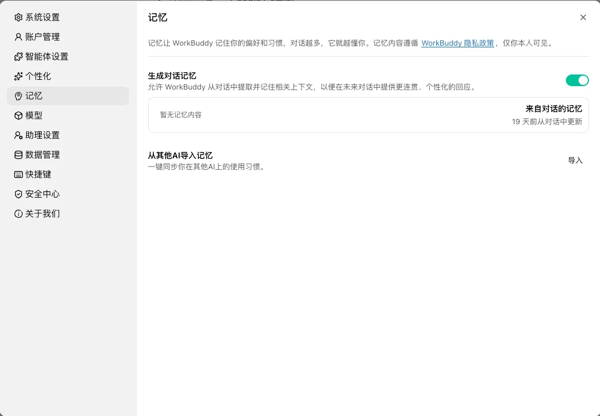
记忆被取用后，也要加入这次的上下文；保存记忆不会让窗口变成无限大。
参考：上下文窗口、WorkBuddy 记忆。
07｜检索增强生成 RAG
AI 先找出相关资料，再根据资料回答，这种做法叫 RAG。
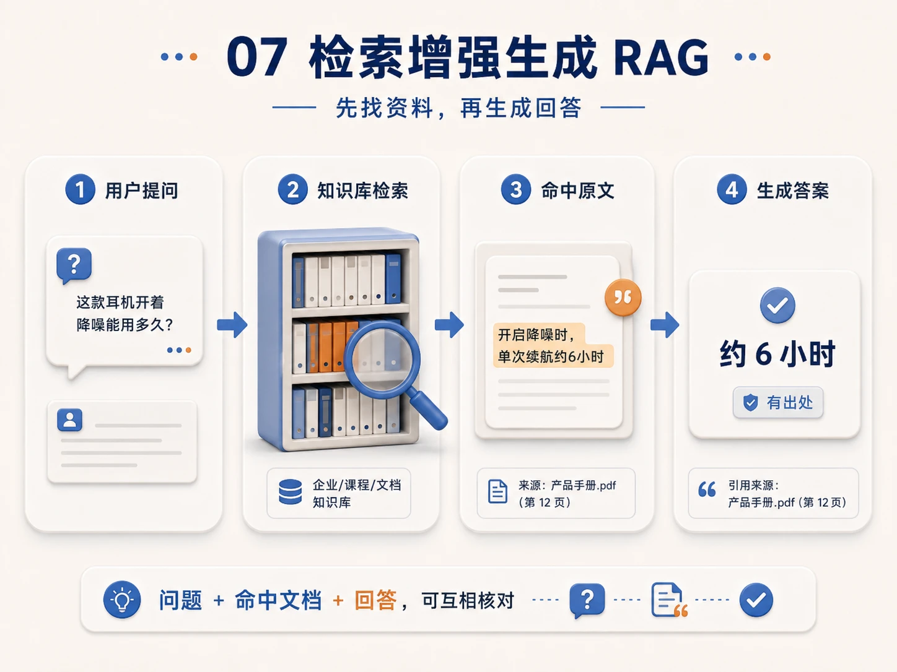
通过 ima 的说明书问答，感受答案怎样从自己的资料里找出来。
假设 ima 知识库里有一款耳机的说明书，其中写着：“开启降噪时，单次续航约6小时。”
你问：“这款耳机开着降噪能用多久？”系统检索到这段说明后，模型据此回答“约6小时”，并附上对应出处。
把问题、命中的原文和回答放在一起，就能核对答案有没有依据，也能发现它是否漏掉了“开启降噪”这个条件。
参考：RAG 原始论文、ima 知识库与检索过程。
第三部分｜AI 执行任务
08｜工具 Tool
模型提出操作请求，工具负责执行，比如查资料、做计算、写文件。
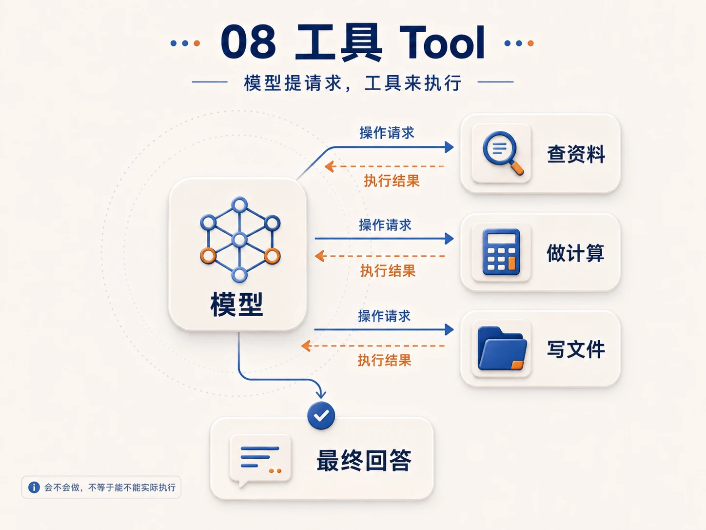
通过 DeepSeek Harness 的执行轨迹，感受工具怎样把操作落实到电脑上。
用户要求基于一份县级失业率与家庭收入 Excel，完成数据分析和可视化报告。
截图中，
todo_write用来更新任务清单，bash用来检查 Python 环境、准备依赖并发起文件下载。沿着这些工具记录，可以核对实际发起的操作与返回结果。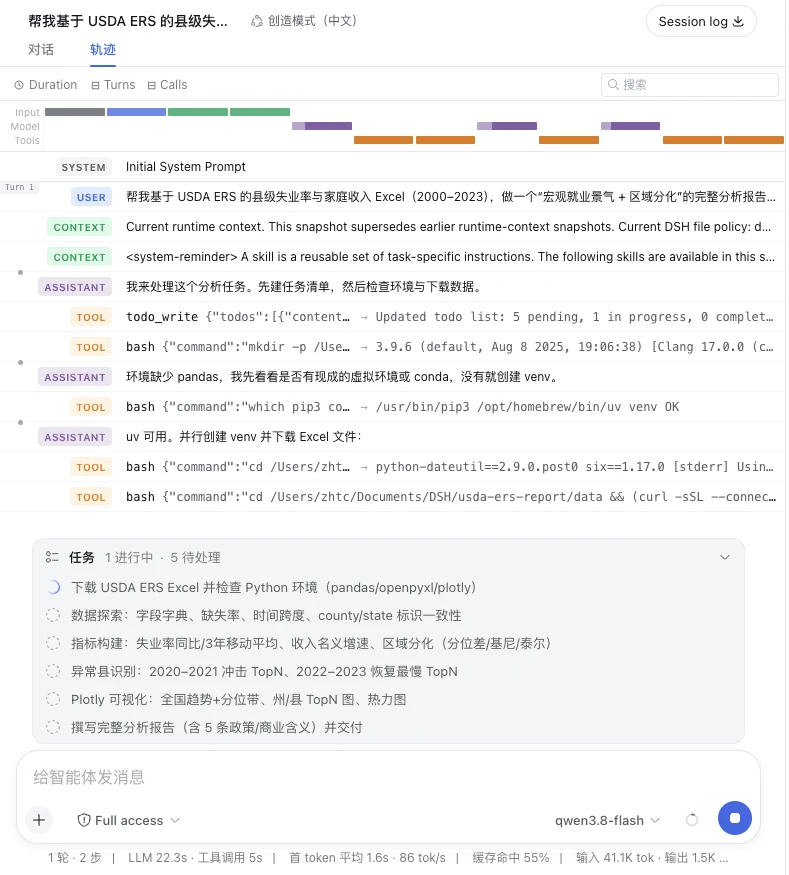
09｜技能 Skill
Skill 把一类任务的步骤、模板和资料打包好，让 AI 需要时照着用。
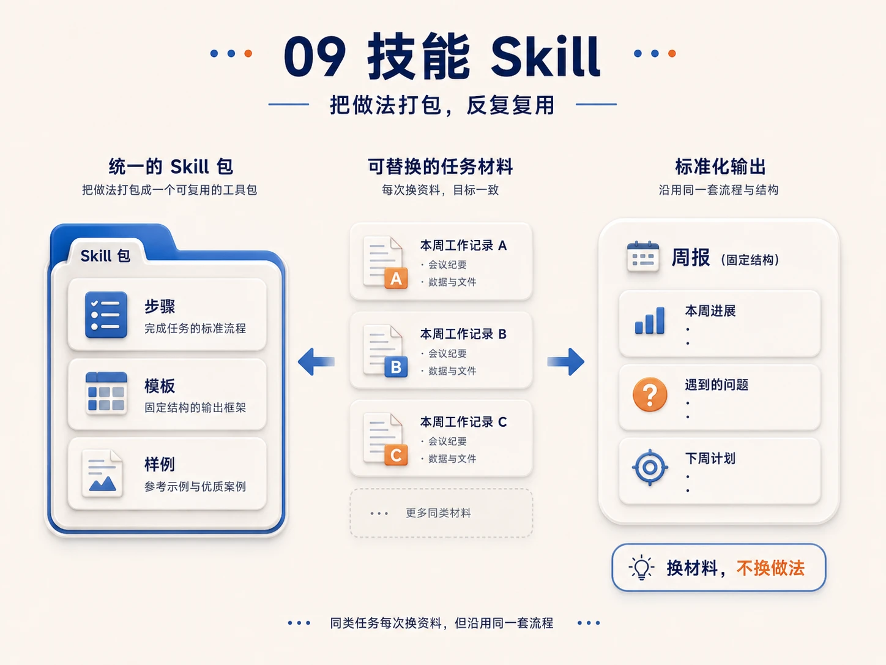
通过 WorkBuddy 的技能列表和周报需求，感受一套做法怎样保存和复用。
截图中的技能按用途排列，涵盖会议纪要、PDF与图片文字提取、PPT制作等任务，方便查找现成的做法。
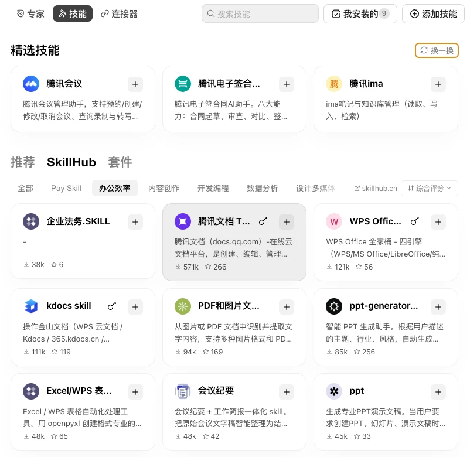
假设每周都要交周报，固定三栏：本周进展、遇到的问题、下周计划。进展先写结果，未完成的事项说明原因。
在 WorkBuddy 这类支持 Skill 的产品里，可以把整理步骤、周报模板和一份合格样例保存为一个 Skill。
以后每周换一份工作记录，AI 都能按这套要求继续整理，不用重新交代栏目、写法和格式。
参考：Agent Skills、WorkBuddy 自定义技能。
10｜智能体 Agent
你给它一个目标，它会自己拆步骤、用工具、检查，再继续。
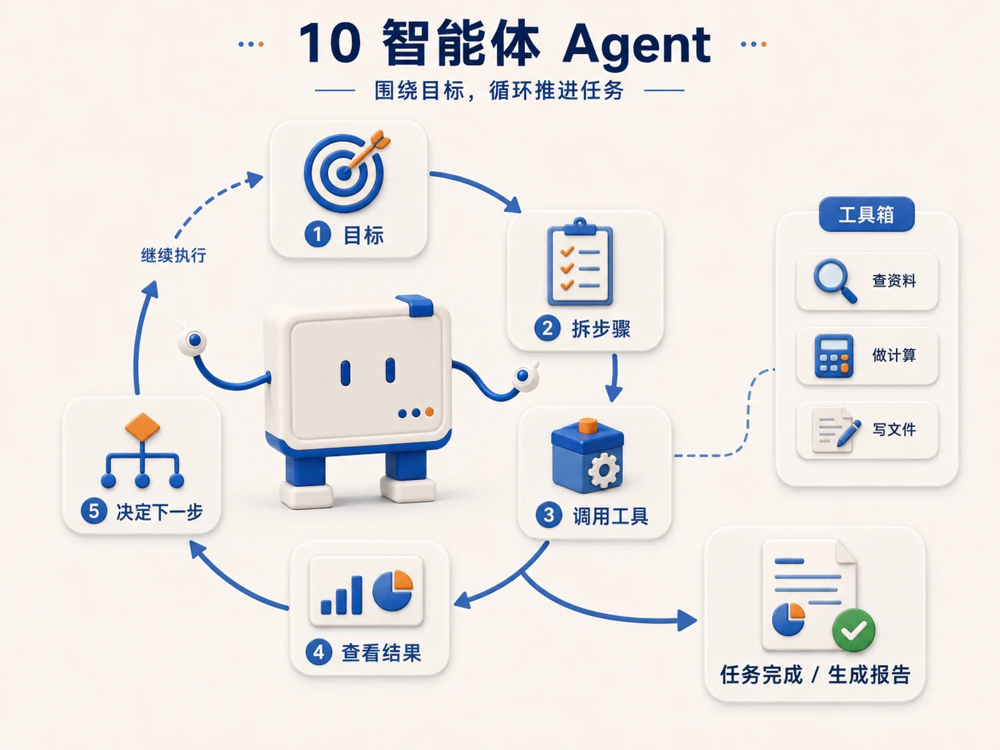
用 DeepSeek Harness 推进分析任务，感受 AI 怎样根据执行结果安排下一步。
面对这项分析报告需求，它先列出6项任务，从检查环境、下载数据开始。
检查发现缺少处理表格的程序库 pandas 后，它把下一步转为查找可用环境；计划在没有现成环境时新建一套，再继续数据处理。
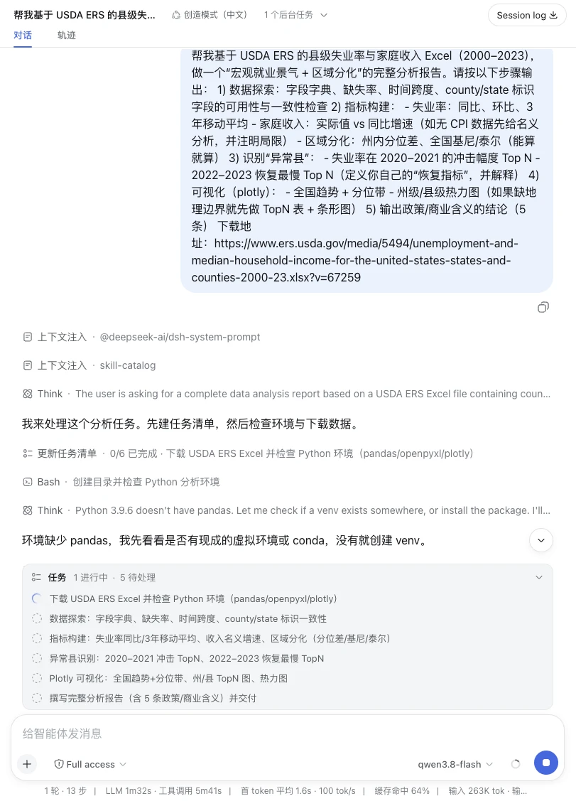
报告：查看分析报告
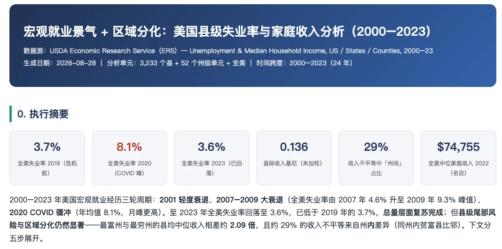
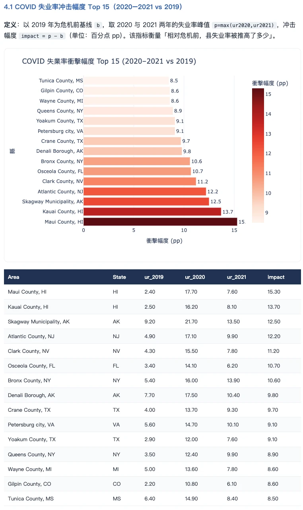
参考：Agent 与工具的配合。
小结
- AI 生成内容：LLM 理解要求并生成回答，Token 计量处理的信息，思考强度影响分析投入，输出仍可能出现幻觉。
- AI 接收信息：Prompt 说明任务，Context 包含这次能用的信息，RAG 补充查到的资料。
- AI 执行任务：Tool 执行操作，Skill 提供做法，Agent 根据结果决定下一步。
延伸阅读
1｜模型与内容
- AI 模型（AI Model） — 通过训练学到规律，用来识别、预测或生成内容。
- 人工智能生成内容（AI-Generated Content，AIGC） — 用 AI 生成的文字、图片、声音、视频等内容。
- 多模态（Multimodal） — 能处理文字、图片、声音等多种形式的信息，具体支持范围因模型而异。
- 神经网络（Neural Network） — 由相连的计算单元组成，通过训练调整参数来学习规律。
- 参数量（Parameter Count） — 模型内部参数的数量，数量多不代表能力一定更强。
- 泛化（Generalization） — 把训练中学到的规律用于没见过的数据或问题。
2｜模型结构与生成
- Transformer 架构（Transformer） — 主要通过注意力机制处理信息之间的关系，是许多大语言模型的基础。
- 注意力机制（Attention） — 处理当前信息时，给相关内容分配不同权重，帮助模型利用它们之间的联系。
- 向量表示／嵌入（Embeddings） — 把文字、图片等内容转成一组数字，方便比较相似程度和查找相关内容。
- 混合专家模型（Mixture of Experts，MoE） — 让多个“专家”子网络分担计算，通常只启用其中一部分处理当前输入。
- 扩散模型（Diffusion Model） — 通过学习逐步去除噪声，生成图片等内容。
参考：Transformer 与注意力、MoE、扩散模型。
3｜输入与生成控制
- 系统提示词（System Prompt） — 由应用设定的指令，用来规定模型的角色、行为和回答方式。
- 用户提示词（User Prompt） — 用户发给模型的任务、问题和具体要求。
- 提示词工程（Prompt Engineering） — 设计、测试和调整提示词，让模型的回答更符合任务要求。
- 上下文窗口（Context Window） — 模型一次能处理的 Token 数量上限。
- 记忆（Memory） — 把有用的信息保存下来，供以后相关对话取用。
- 思维链（Chain of Thought，CoT） — 在得出答案前生成一系列中间推理步骤，步骤本身也可能出错。
- 温度（Temperature） — 影响生成结果的变化程度，低一些更集中，高一些更多样。
参考：思维链、温度与采样。温度作用以模型支持该设置并采用采样为前提。
4｜知识与连接
- 知识库（Knowledge Base） — 集中整理文档、规则等资料，供查询和 AI 问答使用。
- 向量数据库（Vector Database） — 专门存储和检索向量，帮助系统快速找到相似内容。
- 深度研究（Deep Research） — 围绕一个问题多轮查资料、分析和整合信息，形成带来源的报告。
- 模型上下文协议（Model Context Protocol，MCP） — 让 AI 应用按统一方式连接外部工具和数据的协议。
- 应用程序编程接口（Application Programming Interface，API） — 约定软件之间怎样请求功能、传递数据。
- 智能体运行框架（Agent Harness） — 为智能体提供调用模型、使用工具、管理上下文和执行任务的运行环境。
参考：向量数据库、深度研究、MCP、API、Agent Harness。
5｜模型训练与部署
- 迁移学习（Transfer Learning） — 把模型在一个任务中学到的知识，用到另一个任务中。
- 微调（Fine-tuning） — 在已有模型上继续训练，让它更适应特定任务或表达方式。
- 人类反馈强化学习（Reinforcement Learning from Human Feedback，RLHF） — 将人的评价转成训练中的奖励信号，让模型的回答更符合人的偏好。
- 低秩适配（Low-Rank Adaptation，LoRA） — 保持原模型参数不变，通过训练少量新增参数来调整模型表现。
- 量化（Quantization） — 用更低精度的数值表示模型参数，降低内存占用，效果可能受影响。
- 开源与闭源（Open-source vs. Closed-source） — 开源允许查看、修改和分享实现，闭源通常只提供使用入口；仅开放权重不等于完整开源。